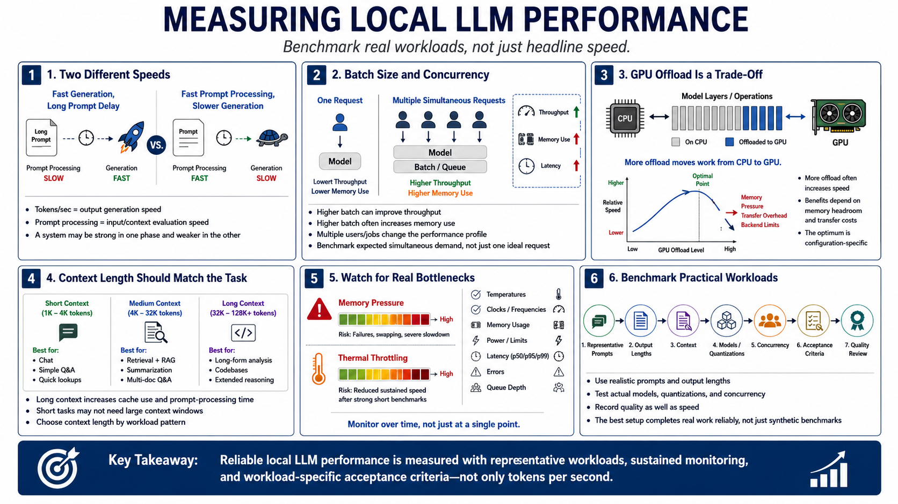

Performance and Tuning Basics
Connecting to LMS... Progress: in progress

Narration
Tokens per second describes approximate generation speed, while prompt-processing speed describes how quickly input context is evaluated. A system can generate quickly yet pause for a long prompt, or process prompts quickly while generating slowly.
Batch settings can improve throughput but increase memory use and may affect latency. Concurrency changes the problem again: several users or jobs compete for compute, cache, and memory. Benchmark expected simultaneous demand, not only one ideal request.
GPU offload moves supported model layers or operations from CPU execution to an accelerator. More offload often improves speed until memory pressure, transfer overhead, or backend limits dominate. The optimum is configuration-specific.
Context length should match the application. Loading maximum context for short tasks wastes cache and prompt-processing time. Retrieval, summarization, code, and chat workloads have different useful context patterns.
Memory pressure can cause allocation failures, swapping, severe slowdown, or service instability. Thermal throttling can reduce sustained speed after an impressive short benchmark. Monitor temperatures, clocks, memory, power, latency, errors, and queue depth over time.
Benchmark practical workloads with representative prompts, output lengths, context, models, quantizations, concurrency, and acceptance criteria. Record quality as well as speed. The best setup completes real work reliably; it does not merely win a synthetic tokens-per-second comparison.